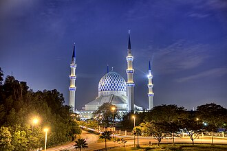

소개
La mosquée Sultan Salahuddin Abdul Aziz, en malaisien Masjid Sultan Salahuddin Abdul Aziz Shah, est une mosquée située à Shah Alam dans l'état du Selangor en Malaisie. Environ 24 000 personnes peuvent s'y rassembler, soit la deuxième plus grande capacité pour une mosquée en Asie du Sud-Est après la mosquée Istiqlal de Jakarta.
مسجد السلطان صلاح الدين عبد العزيز هو مسجد يقع في ولاية سلاغور في ماليزيا، المسجد يقع في مدينة شاه عالم عاصمة ولاية سلاغور، يعد مسجد السلطان صلاح الدين عبد العزيز أكبر مسجد في ماليزيا وثاني أكبر مسجد في جنوب شرق آسيا بعد مسجد الاستقلال في اندونيسيا، وتتمثل الميزة الأكثر بروزا في المسجد هي القبة الكبيرة ذات اللون الأزرق والفضي، وللمسجد أربع مآذن.
The Sultan Salahuddin Abdul Aziz Shah Mosque is the state mosque of Selangor, Malaysia. It is located in Shah Alam and is the country's largest mosque and also the second largest mosque in Southeast Asia by capacity. Its most distinguishing feature is its large blue and silver dome. The mosque has four minarets, one erected at each of the corners.
Sultan Selahaddin Abdülaziz Camii, Malezya'nın Shah Alam kentinde bulunan bir camidir. Adını Selangor Sultanı Selahaddanin Abdülaziz'den almaktadır. Ülkenin en büyük camisi ve Endonezya'daki İstiklal Camii'nden sonra Güneydoğu Asya'nın ikinci büyük camisidir. Caminin en ayırt edici özelliği geniş mavi ve gümüş kubbesidir. Caminin dört minaresi bulunmakta olup her biri köşesinde dikilmiştir ve 142.3 metre yüksekliği ile II. Hasan Camii'nin ardından ikinci en yüksek minarelerdir.
Masjid Sultan Salahuddin Abdul Aziz adalah sebuah masjid yang berada di kota Shah Alam, Provinsi Selangor, Malaysia. Masjid ini merupakan masjid terbesar di negara itu dan juga masjid terbesar kedua di Asia Tenggara berdasarkan kapasitasnya. Ciri yang paling menonjol dari masjid ini adalah kubah bewarna biru dan peraknya yang besar. Masjid ini memiliki empat minaret, yang didirikan di setiap sudutnya.
سلطان صلاح الدین عبد العزیز مسجد المعروف نیلی مسجد ملائیشیا کے شہر شاہ عالم کی ایک مسجد ہے۔ یہ ملائشیا کی سب سے بڑی اور استقلال مسجد، جکارتہ، انڈونیشیا کے بعد جنوب مشرقی ایشیا کی دوسری سب سے بڑی مسجد ہے۔ مسجد کی سب سے اہم خصوصیت اس کا سفید دھاریوں کا حامل نیلا گنبد ہے، جس کی وجہ سے یہ نیلی مسجد بھی کہلاتی ہے۔ یہ دنیا بھر کی مساجد کے بڑے گنبدوں میں سے ایک ہے۔ مسجد کے چاروں کونوں پر بلند مینار قائم ہیں جن میں سے ہر مینار کی بلندی 460 فٹ ہے۔ یہ ملائشیا کی واحد مسجد ہے جس کے چار مینار ہیں۔ دار البیضاء، مراکش میں مسجد حسن ثانی کے قیام تک اس مسجد کے میناروں کو دنیا کے سب سے بلند مینار ہونے کا اعزاز حاصل تھا اور گنیز بک آف ورلڈ ریکارڈز میں اس کا اندراج بھی تھا۔ اس مسجد کی تعمیر کا حکم 14 فروری 1974ء کو سلطان صلاح الدین عبد العزیز نے اس وقت دیا جب انھوں نے شاہ عالم کو ریاست سلنگور کا نیا دار الحکومت قرار دیا۔ مسجد کی تعمیر 11 مارچ 1988ء کو مکمل ہوئی۔ اس میں 16 ہزار نمازیوں کی گنجائش ہے۔
Die Abdul-Aziz-Shah-Moschee ist die größte Moschee in Malaysia.
La mezquita Sultán Salahuddin Abdul Aziz es la mezquita del estado de Selangor, Malasia. Se encuentra en Shah Alam. Es la mezquita más grande del país y también la segunda mezquita más grande en el sudeste de Asia después de la mezquita Istiqlal, en Yakarta, Indonesia. Su característica más distintiva es su gran cúpula azul y plata —por la que también es conocida como la mezquita Azul— y los cuatro altos minaretes, erigidos en cada una de las esquinas.
苏丹沙拉胡丁阿都阿兹沙清真寺，通称莎阿南回教堂、俗稱藍色清真寺（因其藍白相間的圓頂得名），是馬來西亞雪蘭莪州首府莎阿南的一所清真寺，也是雪州的州立清真寺。可容納24,000人聚禮，是馬來西亞最大的清真寺，在東南亞僅次於印尼雅加達的伊斯蒂克拉爾清真寺。以马来西亚第11任最高元首苏丹沙拉胡丁阿都阿兹沙命名。
スルタン・サラディン・アブドゥル・アジズ・モスク は、マレーシア・スランゴール州の州都シャーアラムにあるモスク。青色をしていることから、通称、ブルーモスクと呼ばれている。マレーシア最大のモスクであり、東南アジアにおいても、インドネシアのジャカルタにあるイスティクラル・モスクの次いで2番目の規模である。4つのミナレットが立っている。
술탄 살라후딘 압둘 아지즈 모스크(말레이어: Masjid Sultan Salahuddin Abdul Aziz)는 말레이시아 슬랑오르주의 모스크이다. 샤알람에 위치해있다. 말레이시아에서 가장 큰 모스크이며 동남아시아에서 두번째로 큰 모스크이다. 가장 큰 특징은 커다란 푸른색 돔이다. 모스크는 네 모퉁이에 하나씩의 미나렛을 가지고 있다.
Мечеть Султана Салахуддина Абдуль Азиза — государственная мечеть в Селангоре, Малайзия. Это — самая большая мечеть страны, а также вторая по величине мечеть в Юго-Восточной Азии после мечети Истикляль в Джакарте, Индонезия.
Moscheea Sultanului Salahuddin Abdul Aziz sau Masjid Sultan Salahuddin Abdul Aziz este o moschee din orașul Shah Alam, Malaezia. Cunoscută ca și Moscheea Albastră, aceasta este cea mai mare moschee din Malaezia și a doua cea mai mare moschee din Asia de Sud-Est, după Moscheea Istiqlal din Jakarta, Indonezia.
지도에서
자료와 링크
- Wikipédia — Français
- Wikipédia — العربية
- Wikipédia — English
- Wikipédia — Türkçe
- Wikipédia — Bahasa Indonesia
- Wikipédia — اردو
- Wikipédia — Deutsch
- Wikipédia — Español
- Wikipédia — 中文
- Wikipédia — 日本語
- Wikipédia — 한국어
- Wikipédia — Русский
- Wikipédia — Română
- Wikidata — Q308510
데이터: 위키데이터(CC0), 3개월마다 갱신. 연도는 그 건물에 대해 알려진 가장 이른 건립 연대입니다. 나중에 모스크가 된 건물(아야 소피아 등)의 경우 원래 건물의 연대입니다. 사진: 위키미디어 공용, 작가와 라이선스는 각 사진의 페이지에 있습니다.